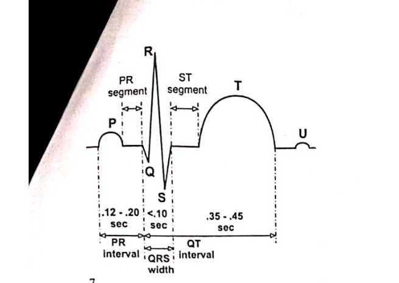

Basophils release chemical mediators like histamine and heparin to trigger and mediate inflammatory and allergic responses. Eosinophils are primarily responsible for fighting parasitic infections and modulating the allergic inflammatory response.
Rh Incompatibility occurs when an Rh-negative mother is exposed to Rh-positive fetal red blood cells, leading to maternal antibody production. In subsequent pregnancies with an Rh-positive fetus, these antibodies cross the placenta and destroy fetal RBCs, a condition called Erythroblastosis foetalis (Hemolytic Disease of the Newborn). It is prevented by administering anti-D immunoglobulin (RhoGAM) to the mother during and after pregnancy to neutralize any fetal antigens before sensitization occurs.
Epinephrine and norepinephrine bind to beta-1 adrenergic receptors on the cardiac muscle cells, activating the sympathetic nervous system pathway. This increases intracellular cyclic AMP (cAMP), which opens calcium channels. The influx of calcium increases both the heart rate (positive chronotropic effect) and the force of contraction (positive inotropic effect), ultimately increasing cardiac output.
The cytometric classification organizes anemias based on red blood cell indices, specifically size (MCV) and hemoglobin concentration (MCH). Its significance lies in helping diagnose the specific underlying cause of the anemia. Examples: Microcytic hypochromic anemia (caused by iron deficiency) and Macrocytic normochromic anemia (caused by Vitamin B12 or folate deficiency).
Hemostasis is the physiological sequence of events that stops bleeding from a damaged blood vessel. It involves three main steps: vascular spasm, platelet plug formation, and blood coagulation (fibrin clot). Clinical applications include the management of hemorrhages, diagnosing clotting disorders (like hemophilia), and using anticoagulant therapies to prevent pathological thrombosis.
Digitalis inhibits the Na+/K+ ATPase pump on the cardiac myocyte membrane, causing an accumulation of intracellular sodium. This buildup reduces the activity of the Na+/Ca2+ exchanger, preventing calcium from leaving the cell. The resulting increase in intracellular calcium enhances the force of myocardial contraction (positive inotropy), which improves cardiac output in congestive heart failure.

A. P wave: Atrial depolarization (triggers atrial contraction). QRS complex (Q,R,S): Ventricular depolarization (triggers ventricular contraction; masks atrial repolarization). T wave: Ventricular repolarization (ventricular relaxation).
B. A Myocardial Infarction can be diagnosed by looking for abnormalities in specific segments. Example: ST-segment elevation (STEMI) indicates acute transmural ischemia and muscle injury, while pathological deep Q waves indicate established myocardial tissue necrosis (cell death) preventing electrical signaling in that area.
The baroreceptor reflex is a rapid, short-term negative feedback mechanism that regulates blood pressure. Baroreceptors in the aortic arch and carotid sinus detect stretch. When standing up quickly, blood pools in the lower extremities, decreasing venous return, stroke volume, and blood pressure. Baroreceptors detect this drop and signal the medulla to increase sympathetic firing, which increases heart rate and causes vasoconstriction to normalize BP and prevent orthostatic hypotension. In the lab, a sphygmomanometer is used to measure and compare BP while the patient is supine versus standing to assess if this reflex is intact.
Cardiac output (CO) is the total volume of blood pumped out by each ventricle of the heart per minute. It is the product of Stroke Volume (SV) and Heart Rate (HR).
Calculation: CO = SV x HR.
CO = 40 ml/beat x 90 beats/min = 3600 ml/min (or 3.6 L/min).
Factors affecting stroke volume and cardiac output include Preload (venous return), Contractility (force of muscle contraction), and Afterload (resistance the heart must overcome). The Frank-Starling Law of the Heart states that the stroke volume of the heart increases in response to an increase in the volume of blood filling the heart (end-diastolic volume) when all other factors remain constant. Essentially, the greater the stretch of the ventricular muscle fibers during diastole (preload), the stronger the force of contraction during systole.
Poor dental hygiene can lead to gum disease (periodontitis), allowing oral bacteria to enter the bloodstream (bacteremia) through bleeding gums. Example: Bacteria such as Streptococcus can travel to the heart and adhere to damaged heart valves or tissue, causing a severe infection known as infective endocarditis. Systemic inflammation from oral bacteria can also contribute to plaque buildup in arteries (atherosclerosis).
At rest, approximately 15% to 20% of the total cardiac output is supplied to skeletal muscles (which would be roughly 540 ml to 720 ml/min for this patient). Reasons: At rest, the metabolic demand of skeletal muscles is very low compared to active exercise. The majority of the resting cardiac output is instead distributed to organs with high continuous metabolic needs and filtering duties, such as the liver, kidneys, and brain.
Intrinsic Pathway: Initiated by blood trauma (Factor XII -> XI -> IX -> VIII).
Extrinsic Pathway: Initiated by tissue trauma (Tissue Factor + Factor VII).
Both pathways converge on the Common Pathway: Factor X activates, binding with Factor V to convert Prothrombin (Factor II) into Thrombin (Factor IIa). Thrombin then converts soluble Fibrinogen (Factor I) into insoluble Fibrin (Factor Ia) strands to form a clot.
Catalysts: Calcium ions (Ca2+) are vital catalysts/cofactors required for almost all steps of the cascade, acting as a "glue" for the clotting factors on phospholipid surfaces.